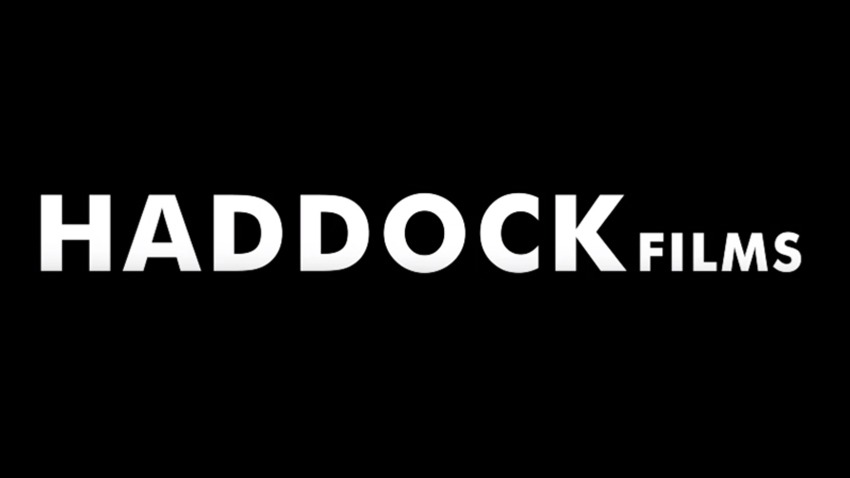
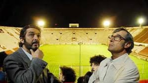
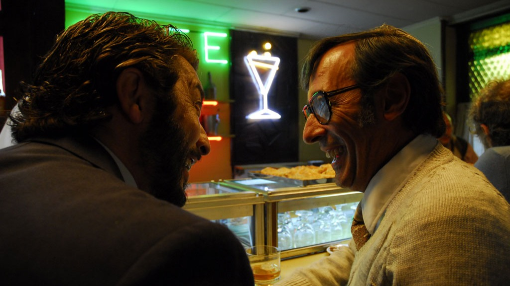

Información sobre los estudios involucrados en la realizacion de la pelicula
Productoras involucradas
Haddock Films
Productora argentina fundada por Juan José Campanella, fue la encargada de la producción local del filme. Bajo la dirección de Vanessa Ragone, Haddock Films coordinó los rodajes en Buenos Aires, gestionó las locaciones y supervisó la logística necesaria para llevar a cabo la filmación de manera eficiente. Su participación fue clave para garantizar la calidad y autenticidad de la película.

Tornasol Films
Productora española con una amplia trayectoria en el cine internacional, se sumó como coproductora de la película. Su colaboración permitió la coproducción entre ambos países, facilitando el acceso a recursos y mercados internacionales. Tornasol Films aportó experiencia en la distribución y promoción del filme, lo que contribuyó a su éxito en festivales y taquillas internacionales.
Telefe
Canal de televisión argentino, también participó en la producción del filme. Su rol incluyó la distribución del filme en Argentina, asegurando su llegada a un amplio público local. Además, Telefe brindó apoyo en la difusión y promoción de la película, lo que fue esencial para su éxito en el mercado argentino..
Detalles de rodaje
Localicaciones
El rodaje de El secreto de sus ojos se llevó a cabo principalmente en Buenos Aires, utilizando locaciones como el Estadio de Huracán para la escena del fútbol, la Estación de Retiro y el Edificio de Tribunales. La producción involucró una extensa preproducción para recrear la ambientación de los años 70, especialmente en el estadio, y requirió gran cantidad de extras y meticulosos efectos visuales para el crowd.
Estadio de Huracán
La escena del partido de fútbol fue una de las más complejas, con tres meses de preproducción y nueve meses de posproducción, utilizando 200 extras para la multitud.

Estación de Retiro
La producción recreó fielmente el ambiente de 1974, incluyendo la colocación de cuadros de horarios y carteles de la época, para la escena del encuentro entre Morales y Espósito
Bar de San Telmo
Se filmaron escenas memorables en un bar de San Telmo, ubicado en Paseo Colón y Pasaje San Lorenzo, que ya ha cerrado.

Edificio de Tribunales
Fue otra de las locaciones clave utilizadas en la Ciudad de Buenos Aires.